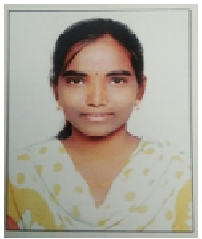

Ms.Uma Maheshwari
Lecturer
Department of Economics
MJPTBCW RESIDENTIAL DEGREE COLLEGE FOR WOMEN
Teaching
Ms.Uma Holds Master's degree from Osmania University.
She Qualified Telangana State Eligibility Test in the year 2014.
She has two years of teaching experience.
She has attended National seminars & one Workshop She Presented One paper, She participated in Mission Bhagiratha project survey.
She has been working as an NSS programme officer in the institution for two years.she is a life time member of Telangana Economic Association.